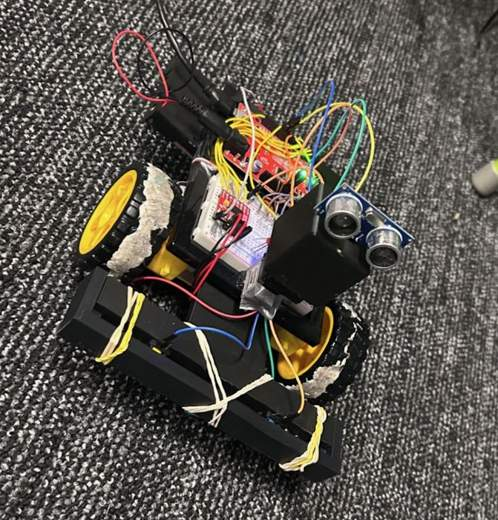
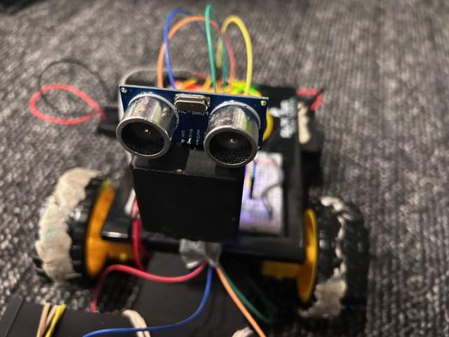

The Pepsi Bot.
A robot that scans its surroundings, seeks a target, confirms contact, and searches for the next one.
A team project by Murphy Roszak & Connor Homes
Milwaukee School of Engineering · MEC 1910-185

The challenge
Design and build a robot that can locate targets, drive into them, detect contact, and move to a different target without repeatedly choosing the same one. The project combined a wheeled drivetrain, a servo-mounted scanning sensor, contact switches, and control logic.
How it works
A servo sweeps an ultrasonic distance sensor through the environment. The program records angle and distance measurements, selects the closest target, and turns the robot toward it. A forward measurement checks alignment before the robot drives.
When either bumper switch registers contact, the robot stops, updates an LED, and reverses. The next search uses the previous turning direction to help avoid reacquiring the same target.
My contribution
The project task tracker assigns me the steering function, scan function, and plotting system. Connor led the robot electronics and bumper work. We shared the conversion to C and the final presentation.
The presentation includes MATLAB code for scan acquisition, target selection, turn commands, and contact handling. Plotting the measurements made it easier to see what the sensor detected and understand how the control logic chose its next move.
What changed during the build
The first contact detector used a photoresistor, but normal changes in ambient light made it difficult to calibrate reliably. The team replaced it with two mechanical buttons, using springs and rubber bands to help the bumper return and respond to contact.
Subsystem integration also mattered: the bumper extended across the wheel width, the scanning sensor sat near the front, and loose wires had to be secured outside the sensor's field of view.

Front sensor and bumper assembly. Photographs extracted from the team presentation.
Results & lessons
The presentation's recorded demonstration shows the robot contacting every target in that run. Across the team's broader testing, the reported trial completion rate was approximately 60%. Keeping those results separate gives a more accurate picture of the prototype's reliability.
The reported scan took about 18 seconds. Reducing scan time and combining repeated readings at each angle were identified as opportunities to improve the next version.
The project gave me experience connecting sensor measurements to physical motion, debugging through plots, and adapting a design when the first hardware approach proved unreliable.
Project documentation
This case study summarizes the team's 33-slide final presentation, submitted for MEC 1910 in May 2026. The original deck includes wiring diagrams, control flowcharts, source-code excerpts, and demonstration videos.
Download project overview (TXT) ↓Source: “MEC 1910-185 Final — The Pepsi Bot,” Connor Homes and Murphy Roszak, May 13, 2026. Project credit and reported results reflect the presentation.